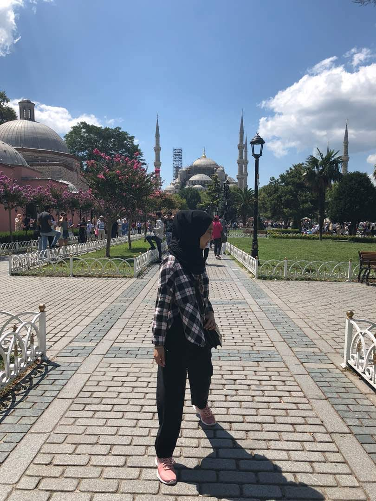

An Unforgettable Vacation
My most unforgettable vacation was 3 years ago during my semester break. I visited Turkey 3 years ago and it was the best vacation ever because I learnt a lot about the place. Right now, I am literally missing the place so much. Therefore, I would like to share my experience about Turkey and hopefully you guys will learn something from this sharing and will be interested to visit Turkey once countries border re-open for us to travel around the world again.
First and foremost, let me tell you why me and my family choose Turkey as our first ever oversea vacation. We choose Turkey because it is a well-known Muslim country with a lot of Islamic history. During the 10 days trip, we had the opportunity to visit 8 states in Turkey which were Istanbul, Pamukkalae, Izmit, Cappadocia, Ankara, Kusadasi, Konya and Bursa. Each state has their own unique features. I was fascinated by historical sites, stories, cultures, traditions, and people. Most importantly, thanks to our awesome tour guide which was full of humors and was so great in sharing about the historical places.
The main reason why we choose Turkey for our holiday destination is because of the uniqueness of the architecture. I saw a lot of eccentric buildings in Turkey and I was fascinated enough with Hagia Sophia. Hagia Sophia is also called the Church of the Holy Wisdom or Church of the Divine Wisdom.Initially, Hagia Sophia was a church then changed to a mosque, a museum and currently function as a mosque again. I visited different mosques every day and the most unique mosque for me was Blue Mosque. Besides being a tourist attraction, it's also an active mosque.
There are few places to head to like Grand Bazaar and Spice Bazaar in Istanbul. There are full of old and modern shops with affordable prices. Turkish people are very nice and very welcoming. They love to have a conversation with the tourist and they are good at recognizing Malaysian and Indonesian tourists. Based on my experience, they were fine with price negotiation. Serving a glass of tea to their guests is their tradition. My family was served with an apple tea by one of the sellers in Grand Bazaar after we had a short conversation with him. The seller also shared that our current Prime Minister had bought pashminas from his store as well.
I'm sure many of you would like to learn more about the country. Of course, there are a lot more I can share about Turkey however, it would be nicer for you guys to experience it yourself. So, I hope when this pandemic is over, everyone can buy a trip to Turkey. You will be amazed by the history and as for me I can't wait to go back!
Exploring new cultures and learning about other countries helps you to view life from a different perspective.
